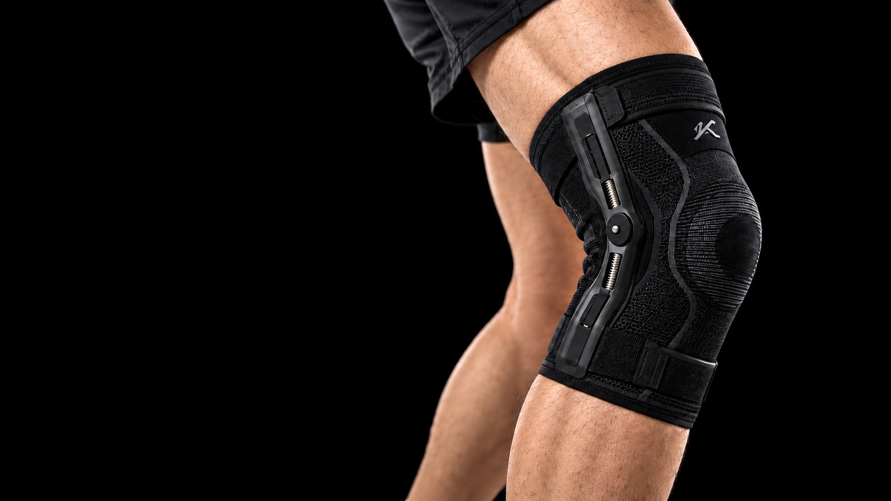

3D isn’t available in this browser. Product preview shown.
We’re Ankush and Panda, and we’re building Konarc for people whose knees make everyday life harder than it should be. A walk, a flight of stairs, or simply getting on with the day can take more thought when you’re dealing with knee pain, arthritis, or a knee that needs support. We want to build something practical around those everyday needs: a sleeve with adjustable mechanical support, designed with the person wearing it in mind. We’re starting with the brace and developing a sensor-connected app alongside it, with TENS integration planned for a future product. Our reason for building is simple: to help people with knee problems feel better supported as they move through their day.
The 3D model is an illustrative design concept. Final product details may change.
Preorders are not open yet. Availability, fit options, and delivery details will be confirmed before ordering begins.
No payment is collected and no order is placed.